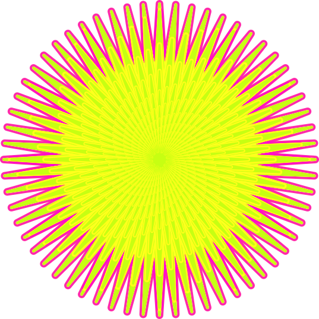

 Home
Home
For this assignment I pretty much used all the required transformations at least twice. And learned that in order to combine different transformations it has to be in the same line of code. Separating them to different lines of code results in only the last line being executed. This is due to CSS reading the last line of code first and ignoring the rest of the transformation lines. Doing it properly results in each of the transformations all being executed at the same time.Utilizing transition-duration sets the length of time a transition animation takes to complete. Say transition-duration is set to 5 seconds and the rotation is set for 900 degrees. It is coded that the element set to rotate will complete the action within 5 seconds sharp. Position Absolute anchors an element so that it can be moved more easily, thus allowing the coder to change the position of the element.
The one thing I had the most trouble understanding was getting the hover on the drop shadow to work. I troubleshooted the code so many times but I couldn’t change the color of the drop shadow nor get it to smoothly move from one side to another. But then I realized that the issue was I that I added an additional ‘,circle’ element when I added another one when I didn’t know it existed. Removing the additional .circle that I made magically made my own code work.